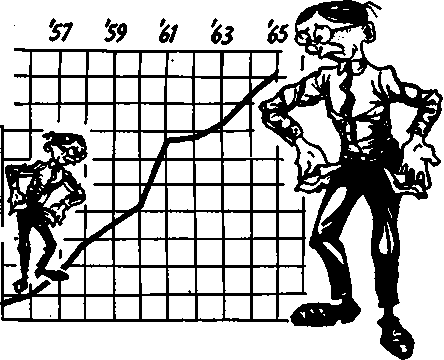

serves.
The insurance agencies could call upon the Treasury for a certain amount of additional funds, and, in a grave emergency, Congress would probably pump more Fed-
THE REASON FOR THIS MAGAZINE
News sources that are able to keep you awake to the vital issues of our times must be unfettered by censorship and selfish interests. ‘'Awake!" has no fetters. It recognizes facts, faces facts, is free to publish facts. It is not bound by political ties; it is unhampered by traditional creeds. This magazine keeps itself free, that it may speak freely to you. But it does not abuse Its freedom. It maintains integrity to truth.
The viewpoint of “Awake!” is not narrow, but is international. “Awake!" has its own correspondents In scores of nations. Its articles are read in many lands, in many languages, by millions of persons.
In every issue “Awake!" presents vital topics on which you should be informed. It features penetrating articles on social conditions and offers sound counsel for meeting the problems of everyday life. Current news from every continent passes in quick review. Attention is focused on activities in the fields of government and commerce about which you should know. Straightforward discussions of religious issues alert you to matters of vital concern. Customs and people in many lands, the marvels of creation, practical sciences and points of human interest are all embraced in its coverage. "Awake!" provides wholesome, instructive reading for every member of the family.
“Awake!” pledges itself to righteous principles, to exposing hidden foes and subtle dangers, to championing freedom for all, to comforting mourners and strengthening those disheartened by the failures of a delinquent world, reflecting sure hope for the establishment of God's righteous new order In this generation.
Get acquainted with “Awake!" Keep awake by reading “Awake!”
> lt|i tn
Published Simultaneously in the United States by the WATCHTOWER BIBLE AND TRACT SOCIETY OF NEW YORK, INC. 117 Adams Street Brooklyn, N.Y. 11201, U.S.A.
and in England
WATCH TOWER BIBLE AND TRACT SOCIETY
Watch Tower House, The Ridgeway London N.W. 7, England N. H. Knorr, President Grant Suiter, Secretary
Average printing each issue: 4,475,000
* copy (Aistralla, 5e; Si nth Afrit*, 3Vac)
Yearly subscription rites
OHtei for semimonthly edlticiW
Canada, 150 Bridgeland Ave , Toronto 19, Ont.
Eh land, Watch Tower House,
Naw Inland, 621 New North IM., Auckland S.W. 1
SMtll Afrlu, Private Bag 2, P.O. Elandafonteln, 70c
(Monthly edition* cost half the above rate*.) RfttlttMeec tor aubwriptlcms should be sent to the office fa your country. Otherwise send your remittance to Brooklyn, Net Ice of expiration Is sent at least two issues before subscription expires.
Now published in 26 languages Sintimonthly—Afrikaans, Cebuano, Danish, Dutch, English, FlnnUh, French, German, Greek, llokor Italian, Japanese, Korean, Norwegian, Portuguese, Spanish. Swedish, Tagalog, Zulu.
Monthly—Chinese, Cfnyania, Hilteayncin, Malayalam, Polish, Tamil, Ukrainian,
CHANGES OF ADDRESS ihaild reach us thirty day* before ywr moyim date. Give us year old and new address (If po»Ible, your old address label). Write Witch Tower, Watch Tower Hov», The Ridgeway, London N.W. 7, England,
Entered as second-class matter at Brooklyn, N.Y, Printed in England
The Bible translation regilarly used In “Awake!" is the New World Trantfatfon of the Holy Serlptoret, 1961 edition. When other translations are eted, this I) dearly marked-
CONTENTS
Ghana’s Supreme Court Upholds
‘‘Your Word Is Truth”
What Happens to a Person
Volume XLVI1I London, England, January 8, 1967 Number 1
AT THE end of a month do you sit down with a stack of bills and sort _out those you can paL now from those that will have to wait. Bo you find that, no matter how much you earn each year, you never seem able to get out of debt? Is your family living from paycheck to paycheck, with little or no cash reserve in the bank? This situation has become so common that a dangerous economic condition has developed.
The average family has too much debt. It is spending too much and saving too little. The personal debt of many American families exceeds 60 percent of their income after taxes. In fact, private and public debt in the United States in 1965 was $1,450,700,000,000, the highest in history. In 1955 it was $786,400,000,000, which means that it has nearly doubled in ten years. The private and public debt for Great Britain reached over £55,000,000,000 in 1964, but in 1965 the public debt alone exceeded £56,000,000,000.
It seems that too many families have no idea what they can afford and so pile one debt upon another until their debts become a crushing burden. If all their creditors were to ask for the" money due them at one time, these families would not know what to do. When Christmas comes, their debt problem does not stop them from going still farther into debt in order to celebrate the holiday with extravagant gift giving. One young family considered itself fortunate to keep the cost of the Christmas celebration to $600, even though this overextended their finances. It is not unusual for banks to report an increase in credit delinquencies after Christmas because people are snowed un-

der with Christmas bills they cannot afford.
The majority of American debtors do not have sufficient liquid assets, that is, cash or something that can be quickly and easily converted to cash, to cover their debts. One-third of all families that annually earn between $5,000 and $7,500 and almost one-fourth of those that make up to-$10,000 a year have no assets in the bank. It has been estimated that nearly a third of all American families have less than $500 they could readily put their hands on.
That living on credit has become a way of life for far too many families is indicated by the way consumer credit for such things as automobiles, personal Ioans, charge accounts, and so forth, has shot up since 1940. In that year the consumer credit that was outstanding was over $8,000,000,000. In 1966 it was over $87,000,000,000, more than ten times as much. Too many people today are up to their necks in debt, with years of their future income already spent. What would happen to them if a recession came along and the wage earner Jost his job?
With so many families in an overextended position, a downturn in business could snowball into an extremely serious situation for the nation’s economy. Foreclosures and bankruptcies would skyrocket. Already the rate of foreclosures is the highest since the 1930’s, even though this is a time of prosperity. In 1955 there were 28,529 foreclosures of nonfarm real estate. In 1965 this figure jumped to 116,664.
Personal bankruptcies are now being filed in record numbers. They have increased every year since 1955. In that year 59,404 bankruptcies were filed, but in
135,000
90,000 |_
1955
180,000 E
45,000
BANKRUPTCIES
1965 this number had more than tripled, to 180,323. In Canada, 1965 was the fourth consecutive year in which bankruptcies had risen.
Obviously too many people are making unwise use of credit, leaving no margin for emergencies. They are living to the very limit of their incomes and, in some cases, beyond that limit. If you are in this position, you are laying yourself open for real trouble.
Indications that economic trouble may lie ahead are in the rising interest rates and the tightening of credit. Not since the 1920’s has credit been so costly and difficult to get as in recent months. This makes it difficult for individuals as well as businesses to borrow money even for necessary things.
In nearly every Western European country interest rates have reached historic heights. In Canada the rates have followed those of the United States. In India and Australia they have been steadily climbing. In Germany some companies cannot borrow money at any price.
The supply of lendable funds in American banks has dwindled because of tight credit to such' an extent that banks are forced to say “No” to more and more customers. Savings and loan associations, which are savings organizations that specialize in home financing and in which depositors are shareholders, have experienced a severe drop in money coming into them. In the first seven months of 1966 the flow of money into savings and loan associations was $568,000,000 as compared with $3,700,000,000 during the same period in 1965. Thus persons with houses for sale are having difficulty selling them, and persons wanting to buy houses are finding it exceptionally difficult to borrow money to buy them.
This has already resulted in a slump of 26 percent in residential construction in the United States. As a consequence unemployment among construction workers is rising. Some contractors are making drastic cuts in their work forces. Many workers in the lumber industry are also being laid off.
Some persons fear that if this condition of tight money continues for very long in the United States, the American economy co1’Id be thrown into a tailspin. More and more financial analysts are talking about a recession. If one does come, it is the debt-ridden family that will be really hurt. Commenting on the possibility of a recession, the magazine Financial World of October 12,1966, observed: “Tight money and unusually high interest rates invariably choke off a business boom and precipitate a downturn. The most severe recessions or depressions of the last hundred years—those occurring in. 1873-79, 1907-08, 1920-21 and 1929-33—began after money rates had skyrocketed.”
We have been experiencing such skyrocketing rates again.
Wage earners in Britain are also faced with the problems of a recession resulting from the government’s austerity program. Widespread layoffs are taking place in the British automobile industry as a result of tight credit that is causing a sharp drop in auto sales. The downturn in the country’s economy is creating hardships for persons carrying a heavy load of debt.
The long-standing problem the United States is having with its balance of payments is not helping the economic situation in the least. In every year since 1950, except for 1957, the country has had a deficit in its international balance of payments; it has had to pay but to foreign countries more than it has taken in. This has caused a heavy drain on its gold supply.
Since 1957 the stock of gold held by the United States has dropped from $22,800,-000,000 to $13,300,000,000, a loss of about 41 percent. In September 1966 it was at its lowest level since September 7, 1938. The outflow of gold can weaken foreign confidence in the soundness of the dollar.
This is an international problem that affects, not only governments, but individuals, because an economic austerity program is usually necessary to correct an unfavorable balance in international payments. That means tight credit, reduction in government spending, higher taxes and possibly wage controls. This is the course Britain is following to correct its serious balance-of-payments problem, and the result has been deflation, falling business profits and rising unemployment. Each wage earner that is laid off in Britain is feeling directly the effects of the national problem. It became so serious before the country launched its austerity program that confidence in the British pound became dangerously weak. Expecting it to be devalued, foreigners were not anxious to hold it as a reserve currency. The same thing dan happen with the dollar if the American balance of payments worsens.
Continued trade deficits and signs of inflation in the United States are giving some Europeans reasons to fear’that the dollar will eventually be devalued. If it does happen, other countries holding many billions of American dollars will be hurt seriously. For this reason some European countries prefer to hold gold in their reserves instead of large amounts of dollars. So they exchange a certain percentage of dollars for gold, which causes the drain on American gold reserves. To raise the price of gold so as to make it last longer is the same as devaluing the dollar. Since the dollar holds such an important place in international monetary affairs, its devaluation would badly shake the economic stability of the entire Western world.
Another country having trouble with its balance of payments is the United Arab Republic. During the first six months of 1966 its imports rose to $564 million and its exports dropped to S377 million. This persistent imbalance of trade has put a squeeze on the country’s reserves, causing it to make repeated sales of gold that is used to back Egyptian currency. These gold sales indicate that the country is in serious financial difficulties that are certain to have an economic impact upon Egyptian families.
With regard to the economic situation in the United States, William McChesney Martin, Jr., chairman of the Federal Reserve Board, pointed out that there are disquieting similarities to the economic situation of the 1920’s. Among other things, in 1965 he said: “Then, as now, the payments position of the main reserve center—Britain then and the United States now—was uneasy, to say the least; but, again, our recent cumulative payments deficits have far exceeded Britain’s deficits of the late ’20s. ... If the dollar is to continue to play its role in international commerce, world confidence in its stability must be fully maintained. The world must be convinced that we are resolved to eliminate the long-persistent deficit in our balance of international payments,”
What does all this mean to you? It means that the money crisis is putting your financial affairs in jeopardy.
Sharp differences of opinion swirl about the question of a recession. The chief economist of the Bank of America do$s not believe that a recession is due. “Our country,” he said, “is not in serious economic trouble. The economy now faces neither galloping inflation nor recession, although isolated symptoms of both will be evident through the year.”
Taking an opposite view, stock-market analyst E. George Schaefer warned, on July 30, 1966, that the stock market in the United States was headed for a bear market, a time when the trend of stock prices is down. He said: “Our own economy and the stock market face the same type of tightening-up that Britain has already moved towards. All of this means that we are going to have some kind of a serious bear market ahead.” He believes the drop the stock market experienced from February 1966 to September was the beginning of that bear market. He even has expressed the view that the nation may experience a depression.
Fear of a possible depression was also voiced by former President Harry S. Truman in August 1966, when he said: “What is more likely to happen [rather than inflation] is that we will bring on a precipitous deflation if we perist in high interest practices. The result could be a serious depression.” That, of course, could bring financial ruin to heavily indebted families.
Whether the economy of the United States or of the Western world plunges into a recession, or a depression, remains to be seen. The best course for you under the circumstances is to put your financial house in order. Trim your expenses so you are living within your income. Avoid unwise use of credit. Examine your debts to see how they can be reduced. Spend money carefully. Institute a policy of thrift.
CHANCES are you work hard for your money, and when you have a little reserve saved up you want to keep it in a safe place. Where do you put it—in a bank, in stocks, in real estate, in a mattress or buried in a metal box? No matter where you put it, the big question is, How safe is it? .
A bank is the usual place where people put money for safekeeping, and banks have established a fine record of safety, blit that does not mean you cannot lose money you deposit in them. If you live in a country where bank deposits are not government insured, or have money on deposit in such a bank, conditions might arise that vcould cause you to lose your life’s. savings. This was clearly shown as recently as October 14, 1966.
On that day the largest bank in the country of Lebanon, Intra Bank, failed. When big depositors began withdrawing large sums of money, it was unable to produce enough cash to meet the demand. It had to close its doors. Panicky depositors milled around the doors, hoping in vain to draw out their savings. Thirteen days later people were still gathering around the bank, angrily shouting, “We want our money!”
In New York city, American depositors in a branch of Intra Bank were just as shocked at the bank’s failure. A young woman with $500 in the bank had to cancel a vacation trip. A man with over $1,000 on deposit said he had heard nothing from the bank. What chances do they have of getting their money?
There are possibilities that the depositors may get some, and perhaps all, of their money back, but the matter is still uncertain. One possibility is that the bank may negotiate funds with several foreign banks so it can open its doors. Another possibility is that the Lebanese government will come to the rescue of the small depositors by making available $17 million to safeguard their savings. Still another is sale of the assets of the bank, but that could take years because of involved legal battles.
In the early 1930’s a number of American banks failed and many people never recovered their lost savings. Austria’s Creditanstalt failed in 1931, marking the beginning of an international financial breakdown. However, the story was somewhat different during the first ten months of 1966 when seven American banks failed. Government insurance protected the savings that people had put in those banks.
In Canada the respected British Mortgage and Trust Company failed in June 1965, but, fortunately for the depositors, the company was merged with another trust company, and this action safeguarded their money. But shareholders in the defunct trust company lost heavily. One said: “I thought having its stock was like owning gold. Now I’ve lost everything."
It is well to keep in mind that a bank is much more than a repository for keeping money safe. It is a lending institution that uses the money you deposit in order to make loans and investments. It is actually your debtor, and your bankbook is its I.O.U. As long as it has sufficient cash assets it can make good its I.O.U. whenever you want to withdraw your money, because not everyone usually wants his money at the same time. While some are withdrawing money others are putting money in. What puts a serious strain on a bank is when everyone wants his money at once, as they did in the early 1930’s.
Some banks are not as cautious as others in the way they make loans and are not as well managed. These factors contributed to the failure of the bank in Lebanon. It made speculative investments and unwisely used money that could be demanded on short notice for long-term investments. Laxity in loaning money appears to be the basic reason for the failure of the seven American banks as well as of several savings and loan associations and finance companies. Too many dubious loans were made. Commenting on this, The Wall Street Journal of October 24, 1966, said: “When enough laxity is present, not only the businesses and banks concerned but the whole economy can risk trouble. Overextension in a boom is a classic invitation to recession.”
In the United States the deposits in most banks and savings and loan associations are insured by the government against loss up to $15,000. This is a protection for depositors against loss,'but in other countries where this insurance does not exist, there is the chance of waking up some morning and finding that your bank has failed and your savings are gone.
When the Public Bank of Detroit failed in 1966—the largest American bank to fail since the 1930’s—it was immediately taken over by the Government’s Federal Deposit Insurance Corporation, which merged it with a sound bank. The depositors lost nothing and continued to have free access to their money. Knowledge of this safeguard has made public confidence in American banks much stronger than it was in the 1930’s. A similar provision exists for savings and loan associations. Money placed in' them is insured by the Government’s Federal Savings and Loan Insurance Corporation. But even in these Government-insured institutions there is a certain amount of risk for your money.
If the American economy should experience a financial debacle, as some financial
analysts believe to be a real possibility, the banks will be put under a severe strain as people scramble for liquid assets such as cash. It will not then be a matter of an isolated bank or savings and loan association that will be in trouble. On this point the magazine
Financial World of October 12, 1966, observed: . .
“Particular concern currently is voiced about the threat the liquidity crisis poses for financial institutions. Banks, loaned to the hilt, are in poor position to withstand any large-scale withdrawals. But savings and loans, with most of their huge assets in long term mortgages, would find themselves in most serious straits should the public suddenly decide it wants its savings.” Under such circumstances there is reason to question the ability of the Government’s insurance agencies to meet the demand for protection of deposits in banks and savings and loan associations. The demand could overwhelm their assets.
In December 1964 the magazine U.8. News t£ World Report made this thoughtprovoking statement: “Federal guarantees have been extended to many transact tidns. ... A special report from the Treasury shows that these guaranteed debts and other obligations now come to more than 347 billion dollars ($347,000,000,000], which the Government promises to pay if those holding deposits or owing on loans default. This is in addition to more than 316 billion [$316,000,000,000] in public debt owed by the Treasury.”
The reserves held by the Federal Deposit Insurance Corporation are about $2,800,000,000 as insurance for $192,000,000,000 in bank deposits, and there are only $1,200,000,000 of reserves held by the Federal Savings and Loan Insurance Corporation against $88,000,000,000 deposited in savings and loan associations.
serves.
The insurance agencies could call upon the Treasury for a certain amount of additional funds, and, in a grave emergency, Congress would probably pump more Fed-
eral funds into them- But the nagging question is, Would the Government be able to supply enough funds during a financial crisis of grave proportions and a general demand for cash in view of the huge sum it is guaranteeing?
There is a much higher risk of loss when money is put into securities than when it is put into a bank. This is due to the fluctuating nature of the securities market. It can descend rapidly when there are fears of a setback in Vui-wACtfe. In fact, the stack, market in the United States dropped 25.2 percent from February 1966 to October, with some stocks losing as much as 50 to 60 percent of their
are down in price and so take a substantial loss.
Money put into real estate is not entirely safe either. As long as there is a boom in real estate, money invested in it does well., but when. the hnnm. ends the value of real es-. tate recedes. The time comes when there are more houses and other property for sale than there are buyers who are able to get the money to buy them.
In 1962 when several thousand workers in an aircraft plant were laid oH their johs, they lound that the money they had invested in real estate was “frozen”; they could not sell the property. Too many homes were for sale in their area. During a
value. An eventual further descent is foreseen by some stock-market analysts who believe there will be an ultimate market collapse that may equal or exceed the market crash of 1929. There are other analysts, however, who take a more optimistic view.
It is claimed that if a person buys securities of well-established firms at regular intervals and in regular amounts, the cyclical ups and downs of the market average out his investment so that he comes out ahead in the long run. But even then his money is not safe, because business reverses, especially during an economic downturn, can throw companies into bankruptcy. Then, too, if he is pressed for cash he might have to sell securities when they serious downturn in the economy, money invested in real estate could be of little help to a person in need of cash to pay his debts. He would have difficulty converting it into cash, and if he did succeed, he would probably have to sell at a much lower price than what he paid for it. But if he could manage his debts without the money that he had tied up in property, he could hold on in the hope that property values would eventually come back up.
Of course, a person could always keep his money in the form of cash, and there would be no danger of his assets becoming “frozen” so that he could not use them when he needed them. However, this is very risky. Cash can be stolen, Lt ma.y he. reasonably safe in a safety deposit box in a bank, but even the safety deposit boxes in a Montreal bank were rifled by thieves in 1961.
If money is hidden in a mattress, a cookie jar, a box or a can, there is always the danger that thieves may get it. There is the case of a sixty-nine-year-old balloon peddler who thought his life’s savings of $40,000 were safe in the ash bin of an old stove in his apartment, but thieves found the money and made off with it.
Another strong reason why cash is not really safe is the devaluating effect inflation has on it. Even a mild inflation of one or two percent a year can deteriorate the purchasing power of money over a long period of time. As inflation eats it away, cash savings become worth less and less each year. A dollar hidden away in 1940 and spent in 1966 would buy less than one-half as much' as when it was hidden. During 1965 the Consumer Price Index in Belgium and the Netherlands increased at the annual rate of between 5 to 6 percent or more. Argentina has been experiencing a 30-percent annual rise in prices. Within a short time such inflationary rises cut down the value of your money.
A classic example of what runaway inflation (far worse than creeping inflation) can do to the value of cash is pointed out in the book Money and Economic Activity by Houghton Mifflin. It states: “In Germany at the end of 1923 it took 1,200,400,000,000 paper marks to buy what only 35 marks could purchase just two years earlier, and in Hungary it took 1.4 nonfllion pengoes to buy in 1946 what only one pengo could obtain in 1938. (One nonillion equals 1,000,000,000,000,000,000,000,000,000,000.)”
In China during the civil war of the 1940’s, Chinese money that was worth one United States dollar lost its value in five years to the point where it was worth only about five-trillionths of a cent. That is the toll that runaway inflation takes.
Think what hardship any kind of inflation brings upon persons depending upon fixed incomes such as pensions, bonds and certain types of life insurance. Think what a disappointment it brings to the person who believes his money is safe when kept in the form of cash.
In answer to the question, How safe is your money?, the conclusion that must be drawn is that there is no truly safe place for it. Even if you could exchange it for gold, it would still not be really safe, because of the constant danger of thievery. So, what can you do about it? Use good judgment in caring for it, but do not worry yourself into a case of ulcers over it. It is true that money plays an important role in daily living, but no amount of money is worth the loss of health and loss of the joy of living that so often go with worry about it. There are more important things for which to live.
A fifty-two-year-old man stood ankledeep in snow one morning looking at what was left of his factory. It had burned to the ground. As he stood looking at the smoldering heap of ashes, he said to his wife: “There are all our hopes, all our savings and all our starry-eyed plans. Well, I guess we’ve lost everything.”
“Everything?” asked a friend standing nearby.
“Yes, everything,” was the bitter reply. “There is no hope. I’m too old to start all over again.”
“But isn’t that your wife?” the friend asked.
“Yes, and she’s a good woman," was the answer.
“You have a wonderful wife, devoted children, friends, neighbors, your health, and you say you have lost everything. Suppose you lost these instead of your factory; then how would you feel?” inquired the friend.
The owner suddenly realized that through the years he had become jso engrossed in making a living that he lost sight of the things that count most in life, things money cannot buy.
Money, nevertheless, is so important in meeting our immediate needs that we may be inclined to forget that ‘life does not result from the things we possess,’ as Jesus Christ said. (Luke 12:15) Often this truth is not appreciated until one is at death’s door, but then it is too late to benefit fully from that realization.
There is no need, however, to condemn money itself. The Bible does not do that. Irj fact, it emphasizes its value. “Money is for a protection,” it says. (Eccl. 7:12) And we can appreciate the truthfulness of this, for it is almost impossible to take care of the feeding, clothing and housing of oneself and one’s family today without money. In many parts of the world money buys facilities such as piped water, electricity and heat, transportation and hospital care, and it Is not wrong to use money to obtain these things.
What the Bible does condemn is the. love of money, the determination to be rich. An apostle of Jesus Christ stated: “Those who are determined to be rich fall into temptation and a snare and many senseless and hurtful desires, which plunge men into destruction and ruin. For the love of money is a root of all sorts of injurious things.” (1 Tim. 6:9, 10) Such love makes people cold and heartless; they will do anything for money, but show little concern for their fellowmen. They are not happy people, and they certainly bring no happiness to others.
Nevertheless, money has a place in life and it is well to grant -it its proper place. But to make money one’s primary goal is the greatest felly, because money fails at the very moment when human needs are greatest. For example, when life is engulfed in sorrow because of loss of a loved one in death, what can money do to wipe away that sorrow? When youth fades and old age sets in, what can money do to restore one’s lost youthful vigor? When health fails, what joy, hope or satisfaction is there in knowing that one’s vault is filled with money? Jesus Christ asked this searching question: “What benefit will it be to a man if he gains the whole world but forfeits his soul? or what will a man give in exchange for his soul?” (Matt. 16:26) Yes, what will you give for your life as a human soul?
The sensible thing is to realize that money has limitations, that it cannot buy everything and that there are things far more valuable than money. Life is not to be compared with money. You cannot buy life with money; for that you must look to God. Npr can money buy a child’s devotion, a mother's affection, a father’s compassion.
If you were blind, living your days in darkness, what would you give to be able to see? How much would it be worth to see your family and friends? What price for a glorious sunset, for a chance to see a flower grow and blossom?
Block out all sound from your ears someday. It is shocking how empty and lonely a place this earth can suddenly become without the pleasant words of a loved one, the sound of laughter, the voice of a child, the song of birds, the enjoyment of music and the hum of everyday life. Even the sound of your own voice is a reassuring treasure. Yet the joy of hearing is something money cannot buy.
The Bible speaks of “the deceptive power of riches.” (Matt. 13:22) It is deceptive because the one who seeks it usually fails to realize its limitations. He is deceived, because he never finds in riches the satisfaction that he seeks. He falsely assumes in his mind that, what little wealth fails to give, great wealth will accomplish. Hence he hungers for more. That hunger increases as it is indulged in. With his wealth he can buy goods, but not happiness.
ARTICLES IN THE NEXT ISSUE • Religion antithe Bible in Communist Russia-
• What Makes a Good Secretary?
• The Chiropractor—Cultist or Curer?
• Friendliness Is Contagious-
American statesman Benjamin Franklin truthfully observed: “Money never made a man happy yet, nor will it. There is nothing in its nature to produce happiness. The more a man has, the more he wants. Instead of its filling a vacuum, it makes one. If it satisfies one want, it doubles and trebles that want another way. That was a true proverb of the wise man, rely upon it: ‘Better is little with the fear of the Lord than great treasure and trouble therewith.’ ” That proverb came from the Bible.
Treasures such as spiritual wisdom and understanding of God’s Word and purpose bring genuine happiness. Declares Proverbs 3:13, 14: “Happy is the man that has found wisdom, and the man that gets discernment, for having it as gain is better than having silver as gain and having it as produce than gold itself.”
Better than gold, the spiritual treasure of divine wisdom can restore happiness to the most depressed persons. One man lost all purpose in living when his seventeenyear-old son died. But after he began a study of the Bible with the Christian witnesses of Jehovah, this man’s mother wrote: “He used to say, ‘What’s the use— I have no purpose for living now.’ But since he’s been studying the Bible, he can eat, and best of all, he has a hope for the future.” A twenty-eight-year-old nurse suffered a mental breakdown while studying for examinations. Her prosperous parents spent much money on psychiatric treatment. When she threatened suicide, a doctor declared her a hopeless case. After the failure of all that money could buy in the way of medical science, this woman began a study of the Bible. Her health picked up immediately, and friends were amazed. "I now have something to live for,” she explained to her perplexed doctor as she told him about God’s new order of righteousness. Money cannot buy the wisdom and discernment that bring true happiness.
Nor can money buy the fruitage of God’s holy spirit. Describing this spiritual treasure, the Bible says: “The fruitage of the spirit is love, joy, peace, long-suffering, kindness, goodness, faith, mildness, selfcontrol.” (Gal. 5:22, 23) Think what it means to have these qualities! For instance, how rewarding it is to have inner peace and serenity, the knowledge that one has God’s approval! In this day of worldwide strife, having the “peace of God that excels all thought” is precious indeed, for it will “guard your hearts and your mental powers by means of Christ Jesus.” (Phil. 4:7) None of the fruits of God’s spirit can be bought with money. They can be obtained only by shunning the money-loving spirit of this world and by conforming to God’s will, by prayer to God for his holy spirit, letting this new force actuate one’s mind.—1 Cor. 2:12-15; Luke 11:13.
Another spiritual treasure of surpassing value is the joy of aiding others to learn God’s truth and to see the change it brings in their lives. One young woman, on learning God’s purpose as set out in the Bible1, realized that she was making a mistake in applying all her efforts to getting ahead financially. She changed her course in life, began to spend time, as well as some of her money, in aiding others to study the Bible. Now she says: “I have something that money cannot buy, and that is peace of mind and Jehovah’s blessing.” Truly, the greater happiness comes from giving, for the Lord Jesus Christ himself said: “There is more happiness in giving than there is in receiving.” The joy and blessing of aiding others especially in a spiritual way make one richer than any amount of money could: “The blessing of Jehovah—that is what makes rich, and he adds no pain with it.”—Acts 20:35; Prov. 10:22.
And what sum of money can compare with the spiritual treasure of the prospect of everlasting life? Money, of course, cannot buy life even in this system of things,-much less everlasting life in God’s new order. Yet this is God’s promise to those who love him and do his will; it is the “hope of the everlasting life which God, who cannot lie, promised before times long lasting.” (Titus 1:2; 1 John 2:17) And concerning this hope the apostle Paul wrote to Timothy: “Get a firm hold on the everlasting life.” He called life everlasting “the real life.” (1 Tim. 6:12, 19) Showing why money cannot buy “the real life,” Jesus Christ said: “God loved the world so much that he gave his only-begotten Son, in order that everyone exercising faith in him might not be destroyed but have everlasting life.” (John 3:16) Can money buy faith? No, and neither can money buy the gift of everlasting life on a paradise earth, after this system of things comes to its end.
Jesus Christ warns that the money of this system of things is destined to become a thing of the past, utterly worthless. Wisely, then, he told his disciples: “Use your worldly wealth to win friends for yourselves, so that when money is a thing of the past you may be received into an eternal home.” (Luke 16:9, The New English Bible) This time is near at hand, for soon now God's kingdom will crush the power-hungry nations of the earth, putting “an end to all these kingdoms,” and God’s kingdom will stand forever.—Dan. 2:44.
Gone, then, will be the value of this world’s money, both for the dead and for the survivors! So the wise thing to do is to heed Jesus’ counsel and use a portion of one’s material wealth to glorify God. We can do that by sharing with others the good news of God’s kingdom, by helping others to obtain spiritual treasures. This does not mean that God’s gifts can* be bought with money. No, indeed! No favor of God can be purchased with money. —Acts 8:20.
But while we still live in this system of things, money has a place in life. It can be used, not only to care for our material needs, but to defray our expenses as we help others with their spiritual needs. And as we have learned, the things of the most enduring value are the ones that money cannot buy. What are you doing, then, to gain these superior riches? You, no doubt, work hard to get money; such hard work is a part of life. But are you applying yourself even more diligently to get the spiritual riches that are worth so much more than money? Such diligence leads to “the real life,” which money cannot buy.
'erue wi
IRITING to the Christians in ancient (? school by means of regular visits from a I Corinth about the contributions they & tutor. During this time he kept up with his I were making, the apostle Paul presented A Bible study and with the congregation meet-a fine principle. He wrote: "If the readiness f ings, preparing beforehand, whether able to is there first, it is especially acceptable ac- T attend the meetings or not. For a time he was cording to what' a person has, not according able to come to meetings in a wheelchair, but
to vhat a person does not have." (2 Cor. 8:12) during the last years it was not possible for
Flow does that apply to you? Think about & him to associate in this way. He continued your physical and mental abilities. Do you & ’ to be enrolled in the Theocratic Ministry ser’e God with what you have? J School, however, and used a tape recorder to
Youths, most probably you have health, (r record his talks. Afterward he would receive vigor and initiative. You can well ask your- S) counsel, by means of the same tape, self, 'Do I serve God with what I have?’ P "No, Larry was not idle. He used what You that are older, advanced in years, o means he had to preach the good news. He think of what you have—the knowledge and A wrote letters, making return calls and con-
wisdom of years, the patience and experience I ducting studies by mail. He also used his
of the mature, the balance of the educated. 1 phone constantly as a means of witnessing.
Though your resources in a physical way P "His optimism was a source of strength
may not be equal to younger ones, do you to many. He didn’t complain—was always serve God with what yow have? s concerned about others. Larry longed to walk
Recently the presiding minister of a con- < and run, and was always looking forward gregation of Jehovah’s witnesses in Oregon to life on the earth under the Kingdom reign, sent to the Watch Tower Society a contribu- f We feel sure he will have such an opportunity tion. He explained that it was from a brother hj in the new system of things.
who had recently died. Then he made these P "Those of us who have reasonably good comments about the brother: A health can certainly do much in the Kingdom
"Larry was twenty-three years old when he £ work. When we see the course of such faith -died, and over a number of years had become jC ful ones as Larry, it makes us realize how weaker and weaker with muscular dystrophy, v much we can accomplish with the resources In spite of this, he was able to finish high we have.”
PiUL and Edmund are young schoolboys who are being raised by Godfearing parents and guardians. Paul, while small in stature and somewhat shy, is friendly to all; Edmund, the younger of the two, is more outgoing and expressive. However, with regard to worship of Jehovah God and belief in his Word the Holy Bible, both boys express a deep faith, and they are active in the local congregation of Jehovah’s witnesses at Abodom, Ghana. Edmund put it this way: “We are quite concerned about being obedient to our heavenly Father, even if this means that we will have difficulties with rules made by men.”
As Paul and Edmund gathered with the rest of their schoolmates in the schoolyard on March 9, 1964, little did they realize that their obedience to Jehovah and their faith in him were to be brought under test. The flag was hoisted and the children around them raised their hands and recited the pledge as part of the morning exercises. But the Bible-trained consciences of these two youths would not permit them to participate in these actions. So, according to their custom, they stood quietly in line out of respect for the flag and the rights of others.
After the group of students was dismissed to their classes, the two young Witnesses were called to the office of the head teacher. A demand was made for them to explain why they had refused to raise their hands when the flag was hoisted.
Paul explained-. “We cannot do so because it is against our belief and we feel it is like giving worship to another god.” Edmund drew attention to the Bible, quoting from the book of Daniel (chapter 3): “We follow the example of the three Hebrews when they were commanded, ‘You fall down and worship the image of gold
Ghanas !
UPHOLDS I
By “Awak«!" correspondent in Ghana
that Nebuchadnezzar the king has set up.’ They knew they could suffer death for refusal and yet they said, ‘The image of gold that you have set up we will not worship.’ ”
The two boys attempted to show the head teacher that they had respect for the symbol of the state. Attention was directed to Exodus 20:4, 5: “You must not make for yourself a carved image or a form like anything that is in the heavens above or that is on the earth underneath or that is in the waters under the earth. You must not bow down to Jhem nor be induced to serve them, because I Jehovah your God am a God exacting exclusive devotion.” Despite the annoyance of the head teacher, Paul and Edmund abided by this principle regarding worship and steadfastly refused to render an act that they conscientiously considered to be a form of worship that should be reserved for Jehovah God alone.
The head teacher, however, accused them of intending to insult the flag and turned them over to executive members of the then government [C.P.P.] party. The boys, their parents and guardians were called upon to explain their stand before these political officials and also before the local chief and his elders. Matters were put into the hands of the police, and it Was only a few hours until Paul and Edmund found themselves under arrest and charged with “insulting the National Flag and Emblem” contrary to law.
Counsel was arranged by the Watch Tower Society, through its Ghana branch, and the two young schoolboys came before a district magistrate on October 8, 1964. Once again opportunity was given them to show from the Bible the reasons for their faith. Substantial evidence was submitted to show that the Ghana Constitution supported freedom of worship and that the stand taken by the young Witnesses was not meant to insult the flag of Ghana. Notable cases from Canada and the United States, where courts have protected the religious beliefs of Jehovah’s witnesses in this regard, were cited.
The prosecution presented as its chief witness the head teacher, who testified under cross-examination: “I am a Christian and a very good one at that. I do abide by the Ten Commandments. If parliament orders that I should kill a boy who steps on my toes I would do it, in spite of the Ten Commandments. ’ ’
Judgment was rendered on November 19, 1964, and the district magistrate said: “The accused persons are immature and are pupils of a Middle School. As such they should, not have allowed themselves to be hampered by religious scruples to do acts contrary to the laws of Ghana. . . . We feel that the charge has been proved and the accused persons are found guilty.”
Sentence by the court was for the two boys to be committed to a Borstal Institution (correctional institution for boys) for a period of three years. This was indeed a blow against freedom of worship. An appeal to the High Court was immediately filed.
At the preliminary hearing, after receiving testimony for only a few moments, the judge of the High Court decided not to allow the appeal.
Could Jehovah’s witnesses gain a fair hearing to see that the harsh sentences against the two young schoolboys were removed? To some the political circumstances in the country made it appear very doubtful. Nevertheless, putting their full trust and confidence, not in man, but in Jehovah, the case was taken to the Supreme Court on appeal.
By this time, Paul and Edmund had been committed to Borstal to serve their sentences. Almost immediately they gained the respect and sympathies of the warders, and excellent opportunities were afforded them to explain their hope in God’s kingdom. Some of the warders expressed regrets that the two youths had been brought there and mixed in with delinquent boys and criminals. After a few weeks application for bail was granted and they were released, pending the outcome of the appeal.
Considerable time passed in an endeavor to get the case before the Supreme Court. True, Paul and Edmund were out on bail, but they were unable to attend school during most of this time. They were anxious to have the matter brought to a right conclusion. But there was nothing to be done but wait.
8.
17
On the morning of February 24, 1966, the army and the police overthrew the government, and many persons expected greater freedom in the land. Would this surprising turn of events make a difference in the case Involving freedom of worship? The case was called before three judges of the Supreme Court on Friday, April 22, 1966.
Counsel for Jehovah’s witnesses presented his arguments and drew attention to the irregularities in the original trial. He appealed for freedom of worship to be allowed, even though at the time of this hearing the Constitution of the country was suspended and there was rule by decree. The Senior State Attorney, whose office had opposed Jehovah’s witnesses all the way from the lower court, now stated that he was not supporting the conviction. After a short deliberation the judges declared themselves as follows:
“No offence had been committed in law ' and it was the duty of the trial Court to have acquitted and discharged the accused persons. It is very unfortunate that the appeal to the High Court was dismissed summarily.
“In all the circumstances, the appeal of each Appellant is allowed. The convictions and sentences are quashed. The Appellants are acquitted and discharged.”
Paul and Edmund have returned to their studies. They are thankful to Jehovah for his guiding Word and for the strength they gained from association with God’s people. They are also very grateful to the Supreme Court of Ghana for its recognition of their sincere belief and stand and for upholding freedom of worship.
able business that involves the export of about $15,000,000 worth of calvings a year. In addition to this, a v$st number of carved items are sold in local curio
HE Wakamba woodcarver of south-central
By “Awake!” correspondent >n Kenya
Kenya has been little affected by the industrial advancement elsewhere in the world. With his adz, a tool with a blade at right angles to the handle, he sits inside a grass hut or in the open under a tree and produces by hand distinctive carvings that are in demand the world over.
From 1955 to the present, wood carving in Kenya moved from a hobby to a profitshops and by street hawkers. The number of carvers has grown, about 600 being in the city of Mombasa alone.
Beginning with a limited variety of carvings, the trade has expanded to more than 500 varieties. About three-quarters of these consist of animals, such as antelope, buffalo, elephant, rhinoceros, giraffe, and so forth. Among these the most popular are carvings of antelope and elephants.
Other carved items, some of which are of practical household use, are salad sets, letter openers, lamps and bookends.
Most carvings are made in Muhugu wood. Its straight grain and fine texture make it ideal for carving. Muhugu wood, which grows in the lowland areas of Kenya, is bought by the truckload and sold to carvers by the foot. When buying wood, the carver must have in mind what he is going to carve. For instance, if he has orders for salad bowls or masks, he would buy wood that is not too hard in the center so the work of shaping them will be easier. On the other hand, if he plans to carve an animal, the wood needs to be firm all the way through.
There are six basic steps that a carver follows when he begins to work on a piece of wood. First, he cuts the wood to the size of the carving he has in mind. Then with his adz he blocks out the general shape. When more than one carver works on an item, it is passed to the second man after the adz work is finished. He specializes in forming the delicate parts of the carving. With a file he smooths the figure, taking off the rough edges. A special, rounded knife is then used to work on the horns, face and legs- This stage of the carving requires skill for the carving to have good form and expression.
With the carving work done, the figure is sandpapered to give it a very smooth surface; then it is waxed. Another person may do the waxing and polishing. So that the wax will penetrate the wood, he usually heats the carving over a fire before applying it, in this way giving the carving a more lasting finish. After its. base is tested to make sure it stands well, the carving is ready for the market.
The Wakamba have become very adept in this method of carving. An incident illustrates this. When a Canadian man living in Mombasa asked a carver to make a figure of a moose that he could send home as a gift, he showed the carver a picture of the animal. Although the craftsman had. never seen a live moose, he produced a beautiful sixteen-inch carving, with only the picture as a guide.
During the past five years more and more of the world has been introduced to Wakamba carvings. From Mombasa, the port area of Kenya, they have been going out to all continents of the world. They are proving to be a profitable export that is benefiting the economy of Kenya.
When asked what the biggest problem is in the wood-carving business, the carvers themselves say that it is lack of organization among them. They generally tend to work by themselves rather than in cooperatives. Another problem is their willingness to sell an item ordered by an exporter to another person when a few pennies more are offered. Thus exporters can never be certain of getting what they order. Such action is hurting the trade, a Mombasa exporter claims. Some persons believe that cooperatives would overcome this problem and probably bring the carvers a consistently better price.
There are a few things a person can keep ip mind when buying a wood carving. He should first determine the kind of carving he wants so that it will blend with the decor of his home. Then he can decide on the basic proportions of the figure and on the type of wood he wants.
When buying a carving of an antelope, for example, he should look for wellshaped horns and ears. The facial expression must also be examined to see if it is suitable. This is determined by the shape of the eyes, ears and other delicate parts of the animal’s face. The proportions of the body need to be examined to see if it is too long or too short. The length of the legs should be of the right proportion and well formed. The way the grain runs is also a factor to be considered, as it can help simulate the body contours of the living animal.
If a carving of an elephant is under consideration, it is more appealing to some persons if the trunk is down rather than thrown back. A lion or hippopotamus that is carved with its mouth closed may be cold and unappealing in comparison to one with its mouth open. Similarly, a warthog that is carved with its tail straight up as if it were in flight conveys more action than one with its tail down as when the animal is feeding. Of course, personal tastes vary. But when a purchaser watches these small details, he is more likely to get a carving that is pleasing to the eye. It would also be wise for a person to avoid carvings that represent figures that are used in the demonistic religions of Africa, as their presence in a home might open the way for unpleasant spiritistic activity there.
If you are one who likes hand-carved figures, you might find these various suggestions helpful. Knowing how and where they are made adds to their interest. Since wood carvings are produced in many parts of the world, with varying quality, you have many to choose from, but examine carefully the figures you intend to buy so as to be sure of getting something that will be pleasing to you and that will add interest to the appearance of your home.
‘Ote ‘^eti^ioud <zBackgrou.nd
I toreador fresco was discovered in 1901 only 1 one other was known to archaeologists, and । that was one found on the Greek mainland in [ 1884. Later a third one was found in India. 1 In his book Wonders of Antiquity, Leonard । Cottrell states: "It seems possible that the [ bull cult may once have extended far beyond 1 Crete into other regions of the Mediterranean. । Could the Spanish bull fight ... be a sur-[ vival?” Indicating that it is, the Dictionary of ' Folklore, Mythology and Legend, published i by Funk & Wagnalls Company, states on page [ 170 of Volume I: “In Crete the monstrous > Minotaur was deified and sacrificed to, and ! his slaying was reenacted in the Athenian J Theseus plays. In Egypt the .bull Apis and [ corn god Osiris, after their death and dis-[ memberment, were resurrected as Osiris-Apis. > Such bullfight and resurrection rites have । found their way through Spain to Mexico and ! New Mexico, in the huehuenches of Villa [ Alta, Oaxaca, in the tor eadores of the Sierra [ de Puebla, in the toro-abuelo (bull-grand-[ father) fight connected with the San Ildefonso > and San Juan matachina.”
FLAMENCO DANCING ■
The famous flamenco dancing of Spain ap- ! pears to have an ancient religious back- [ ground. In his book Wonders of Antiquity, । Leonard Cottrell states; “Spain is the home ] of that supremely erotic dance, the flamenco, [ and I have often been struck by the resem- i blance between the flounced skirts and tight J waist of the female flamenco dancer and those ' depicted on the Minoan frescoes. But I was । startled to be told by a student of the dance [ that the sinuous movements made by the [ arms and hands of the woman flamenco ।
dancer represent the writhing of a snake.
The presiding deity of Crete was a snake ] goddess.”
Among the ancients the bull was a common [ object of worship, and practices linked with । that worship have come down to our day. [ A variation of one of those practices is bull- ' fighting. In Crete an ancient Minoan wall । painting depicts the art of the bull vaulters. J Some experts think that these toreadors were ! sacrificial victims devoted to the Minotaur, 1 the legendary bull-man. At the time this J
ON WALKING into your house, would you like to hear the patter of little feet run-,ning to greet you, see arms outstretched, face upturned in joyous expectation, and hear squeals and coos of delight because of your return? You would? Then you would like a gibbon.
Here in Laos many Americans and other “foreigners” enjoy having 'them for pets as much as the Lao people do. And after having had one, it is hard for them to go back to a dog or cat. Even parrots and monkeys are ordinary by comparison.
Yes, monkeys are quite different from gibbons, both in appearance and personality. Gibbons are long-armed and have no tail; they are little apes; and while monkeys are interesting to watch for half an hour or so at a zoo, gibbons are an unending fascination combining the grace of a ballerina and the gawkiness of a slapstick comedian. When taken as a pet, a gibbon, or tunny, as it is called in the Lao language, will win its way into your heart as a child would.
Monkeys walk on all fours, but a gibbon stands up, though not as efficiently as a man; thus zoologists regard the gibbon, as well as all the apes, as being essentially four-legged. Watching the gibbon walk on the ground is an amusing experience. To walk on its two legs this tree animal has to balance itself with its
By "Awake!" correspondent in Laos
long arms held high. The resulting gait is a caricature of a slightly off-balance, very bow-legged person.
The gibbon’s face is not at all the wrinkled-up face of a monkey, but, rather, the skin resembles the fine leather used in kid gloves, just as soft as a deer’s nose. Its little black or brown face peeks out from a circle of white fur. Eskimo-fashion.
Blond tunnies are lovely to see in the trees. The sun catches the tips of their fur and surrounds each creature with an aura of gold.
When hanging by the hand in a tree, a gibbon might seem like a finely made toy. The little body is rotund (especially after a meal), 'causing the place where the legs join to appear curiously like a seam with stuffing pushed up to it from both directions. The whole of the animal, except face, ears and palms, is covered with fluffy black or blond teddy-bear fur, tapering pantaloon-style to reveal delicately slim ankles and wrists. Black shoe-button eyes, an unexpected pink tongue, and fine, white china-doll teeth add to the toylike appearance. So do the fine humanlike ears that give the unrelated appearance of having been fastened on after the toy was finished. The “kid glove” hands are complete with fingerprints, and even the fingernails are worthy of note; they never tear off ragged, but a periodic weakness causes each one to break in a remarkably smooth tapet.
A gibbon in the trees is truly a beautiful sight to behold. Only birds in flight equal the grace of this animal in its natural habitat. For locomotion, gibbons use their hands. Feet are often used for eating. Hence they were designed with feet that look much like human hands, and hands with double-length fingers that enable them to reach around branches with ease.
Their timing and precision as they swing from bough to bough is amazing. A gibbon is able to judge the resilience of each branch, knowing just the amount it will “give,” and just the split second to let go on the upward spring, thus propelling itself through space to the next branch as much as twenty to forty feet away. To an observer the motion looks like a graceful wave as each branch bows and then springs up again. And the gibbon does it all day long and at high speed, never once stopping to contemplate time, speed and distance, as trapeze artists often have to do.
In their natural forest habitat, the male and his mate and their young are always together. The young remain with the family until they search out their own mates, usually at the age of six. So the family may contain eight to nine individuals moving as a group, eating choice leaves and fruits, spiders and bird eggs, making no home, but sleeping on any convenient branch. Thus they enjoy their twenty to thirty years of natural life.
Gibbons are the smallest, gentlest and least known of these apes, which also include chimpanzees, orangutangs and gorillas. The several species of gibbons are native to only the southeast Asia area. The most affectionate kind, which people here take into their home, is commonly* known as the white-handed gibbon.
When living with a human family these charming creatures rise early with a cheerful disposition, looking forward to a day of mischief and fun; and their heads nod with sleep as soon as the setting sun touches the horizon. In the house, a sleepy pet gibbon will sprawl on furniture or floor like a teen-ager watching television. They get themselves into such ridiculously contorted and relaxed positions that people who see them marvel that they do not fall out of the dizzyingly high treetops where they make their homes naturally.
As to cleanliness, a gibbon will be fastidious, always keeping its box clean by sweeping out things with its hand. Tunnies do not fight over food like monkeys, who will grab from each other and stuff the pouches in their cheeks until they look as though they have a face full of marbles. However, the gibbons carry their commendable trait a bit far: If they are not hungry, they sweep their food right out too. Rather than “saving for the morrow," they prefer begging the good-hearted master for a new banana at the next pang of hunger.
Gibbons are fairly trainable as household pets. They can be taught to stay off furniture, for instance. However, it is questionable whether anyone will ever be able to train one not to eat house plants!
People who have “been adopted” by a gibbon sometimes reflect with surprise that their tunny cannot talk. Otherwise it seems so human. The main characteristic of its behavior toward people is the strong desire to be held and hugged. It will reach out its arms, and actually smile and groan in ecstasy when picked up. Being equipped with such long arms, it is one of the world’s best huggers. An animal measuring ten inches from where it sits on your lap to the top of its head can (and eagerly will) reach around your back and neck in a gibbon hug. There it will sit contentedly for hours, being disturbed only if you eat, in which case, of course, it will want some too.
Gibbons are not fussy about how they hug, just so they are with their beloved owner. They will attach themselves around his neck, hang from his shoulder, or even cling to his ankle if it is too hot for ordinary hugging. Couples without children find that the little apes liven the home with fun and affection, and have the advantage that, when the couples have work to do, they can just toss the gibbon out the window into the nearest tree.
Their inventiveness for fun and mischief would be hard to surpass. For example, if you had a gibbon and one day you heard, Thump! pat, pat, (silence), Thump! pat, pat, (silence), Thump! what would you think? When one gibbon owner investigated such sounds, he found his pet had invented a game. It would climb an open door, gleefully jump on the bed, run across the floor, scurry up the door, and merrily jump again!
A standard sport among these furry fun lovers is closing the eyes and staggering around as if drunk until the clowning animal bumps into something and falls down. Then it is off again until it bumps into something else. Landing smack on the face does not stop them from thinking it is great fun, and somehow they never seem to get hurt. Another favorite pastime is leaning on one forearm on a smooth floor with head way down and propelling themselves pell-mell with the back legs into spins and skids around the room.
It is said here that there is only one thing more fun than a gibbon, and that is two gibbons. When two strange gibbons see each other for the first time, they put their long arms around each other and sit there in a tunny hug, making little noises and getting acquainted. Custom and manners satisfied, the fun starts! If in the house, they roll into a single ball of fluff and go stumbling and tumbling over each other from room to room, yet, amazing as it seems, rarely destructive. If in the trees, they really enjoy themselves. What a happy God must be the Creator of these funloving creatures!
The Asian tiger is a versatile eat, being an expert swimmer, a jumper and a climber. In fact, tigers are known to have swum the five-mile strait between Malaya and Penang. As a jumper, Asia’s big cat is able to cover fifteen £eet or more in a single bound. And the tiger is “a born climber,” says George G. Goodwin, Associate Curator of the Department of Mammals of the American Museum of Natural
History. As Richard Perry reports in his volume The World of the Tiger: "A young tiger in Assam was seen lying flat on a branch, 60 feet up a soft-skinned tree that was branchless for its first 45 feet.” Asia’s biggest cat is extraordinary indeed!
'HE beautiful islands of Samoa in the

South Pacific, with their tropical climate, their coral-girt shores, their lush vegetation, dreamy lagoons and happy inhabitants, seem out of place as a backdrop for power play by the three leading naval powers of the late nineteenth century. Yet it was in this idyllic setting that international rivalry threatened to break out into savage conflict. How could such a critical situation arise? And what were the considerations that moved rival nations so close to a fatal rupture?
To get the answers to these questions, it is necessary to learn a few facts about the history of Samoa and her relations with the Western world. The primitive and carefree islanders once led a life that required a minimum of work and responsibility. The soil produced delicious fruits that they could harvest almost without effort; bananast guavas, avocados, mangoes, custard apples and many others. The surrounding ocean abounded with edible fish of every sort. There was plenty of time for water sports and for the canoebuilding that earlier gained for this group the name of Navigators Islands.
But things began to change with the advent of the white men. During the centuries explorers, adventurers, whalers, pearl divers of many nations used and abused the facilities and the inhabitants of Samoa. Unscrupulous traders took to purchasing or even kidnapping Samoans for service as slaves in the plantations operated by European colonial powers, in eastern Australia and elsewhere. Soon missionaries of Christendom came to inmonies. The ways of “civilized” men began to rub off and the simple Samoans learned about hypocrisy and commercial greed. The white man’s diseases began to take a toll of life in these islands. By the tatter part of the nineteenth century almost all Samoans were said to have been “christianized.”
There were other developments also. White men, Germans, Americans and Britishers, came, not merely as visitors, but to settle down in Samoa. The equable climate and the easy life appealed to them. Many of them took Samoan wives. Officials representing the governments of Germany, Great Britain and the United States soon followed, to care for their respective nationals and trade interests. Consular officers began to influence the local tribal government.
The nineteenth century, keep in mind, was the era of the steamship fueled by coal, as well as the era of colonial expansion by all the world’s naval powers. Distant colonies required long voyages, and this, in turn, led to a search for strategically placed bases that would prove useful as safe harbors and coaling stations for naval and merchant vessels. Thus we can begin to comprehend the interest in the possibilities of the Samoas manifested by the Western nations. Here was an island group most conveniently located for several main ocean routes connecting the Americas with colonies and possessions in the Far East!
In 1878 the king of the Samoans granted the United States the use of the harbor at Pago Pago on Tutuila Island as a naval base. German officials quickly followed suit by obtaining almost complete control of the harbor at Saluafata, near Apia, the capital of the western group of the Samoas. Britain also contrived to gain similar rights. At Apia itself all three of these nations were granted small territorial concessions for commercial convenience.
Strife among rival factions of Samoans broke out, probably influenced by and certainly promoted by the Western interests, each one in support of its own national aspirations. Things at one stage got so far out of hand that armed Germans seized the American flag and only with difficulty z were prevailed on to restore it. The Germans claimed that British and United States citizens- in Western Samoa should come under the jurisdiction of their military law. Relations between the contending parties continued cold and unforgiving.
Three German naval vessels were already in Apia harbor when, in March 1889, naval units of Britain and America appeared on the scene. All together there were now seven naval ships and about fifteen other vessels anchored in this small harbor on the north shore of Upolu Island. Reporting on the tension between the German and American officers and officials, the well-known author, Robert Louis Stevenson, had this to say: “Germany and the [United] States, at least in Apia bay, were on the brink of war, viewed each other with looks of hatred, and scarce observed the letter of civility.” Only a minor incident, in these circumstances, would be needed to touch off a major explosion.
On the evening of March 15 the weather already began to assume a menacing aspect. The barometer dropped steeply. Sheets of rain began to fall. Good sea sense should have prompted the responsible naval officers to evacuate a crowded harbor whose narrow entrance faced directly into the teeth of a threatening gale. However, each officer knew he had to play his part in the policy of intimidation by show of armored might. None would leave the others in the harbor, and so all stubbornly held on, trusting to their anchor lines and their ability to ride out a storm.
During the night the gale gathered strength, reaching hurricane proportions by the following evening. Would the lines hold? Swiftly came the realization that all were in extreme danger. Mountainous seas kept sweeping in from the north, the whine of the wind grew louder. On every ship it became a struggle for safety and life. Dispute over sovereignty of a few volcanic islands was forgotten for the time as all hands labored to manage the ships and avoid disaster.
In the early morning of March 16 the British corvette found itself in danger of bearing down upon one > of the American cruisers, tossing about in a disabled state at the harbor entrance. The British captain determined to put on full steam and make a run for the open sea through the narrow passage left between the rocks and the American vessel. As he safely negotiated his exit the crew on the American ship, though themselves in imminent peril, let out a loud cheer. The British ship was now much safer amid the tossing waves of the open sea. The strength of the hurricane may be judged from the fact that the British captain that day logged no speed in excess of one sea mile an hour.
Meantime in the harbor anchors dragged and lines snapped as ship after ship lost in the grim struggle with the winds. Vessels were tossing wildly and col-tiding helplessly. A German gunboat crashed broadside onto the coral reef and was pounded to pieces by the crashing waves, as though it were just a native canoe. The German flagship struck the reef and turned over, throwing her crew into the churning waters. A third German vessel, after colliding with several other-ships, was swept ashore on a sandspit, from which it was later refloated only after considerable difficulty.
One American cruiser lost its smokestack, was fouled by a German ship and then beached. Another dragged along the edge of the reef, finally struck it and capsized. The flagship of the United States squadron, after holding on for a time at the harbor entrance, her rudder and wheel both damaged, and badly flooding inside, also ended up on the beach. The Rear Admiral’s dispatch to Washington advised: “Every vessel in harbor on shore except English man-of-war Calliope which got to sea. Trenton and, Vandalia total losses. Nipsic beached; rudder gone; may be saved; chances against it.”
As the tempest abated a sorry spectacle met the gaze of survivors of the catastrophe. The beach was littered with debris and wreckage of ships and forest trees. Naked corpses lay along the island’s seaboard. Ninety-two German crewmen and fifty-four American officers and sailors were among the victims. Some had been swept overboard, some had been knocked out by heavy pieces of debris propelled through the air by the hurricane’s force, and others were drowned in the attempt to reach shore through the boiling seas.
National interests receded into the background as the dazed survivors now took stock of their situation. Now they could ponder the fact that all the islands and their contents could not pay for the lives lost and the financial damage sustained. A score of naval and merchant ships had been reduced to scrap. In less than twenty-four hours the wind and the sea had brought all the rival demonstrations of naval might to nothing. The contending parties were united in a common sorrow.
And what about the differences over rights and privileges in the Samoan islands? Representatives of the three powers met in Berlin soon after and sought to smooth out their problems peacefully. The German statesman Bismarck, to his great displeasure, found the Americans adamant in their insistence upon leaving the Samoan people a large measure of independent government. It t was finally agreed that the islanders would continue to administer their own laws and customs, while a Supreme Court, made up of one justice appointed jointly by the three signatory powers, would be the arbiter in all disputes. Thus it was hoped that peace could be maintained in Samoa.
So, governments may develop policies dictated for the most part by narrow nationalistic objectives. They may rattle the sword and display their naval strength. But, when their powers are pitted against the forces of the wind and the sea they turn to weakness and helplessness. Men and nations do well to takfe to heart the reminder of the Bible writer James: “You do not know what your life will be tomorrow. For you are a mist appearing for a little while and then disappearing.”—Jas. 4:14.
WHO is there that has not lost a close relative or friend in death? Every day some 160,000 persons die, on the average, leaving millions of persons bereaved of loved associates. It is only natural that those who remain alive should wonder, What happens to a person when he dies? Does he pass on to another life? Does he have an immortal soul that goes either to heavenly bliss or a fiery hell? What does God’s Word the Bible teach on this matter?
You may be surprised to learn that the Bible’s teaching is quite different from what is commonly believed. Why not locate your own copy of the Bible and turn in it to the one hundred and forty-sixth Psalm, verses three and four. If yours is the Authorized or King James Version you will notice that it reads: “Put not your trust in princes, nor in the son of man, in whom there is no help. His breath goeth forth, he returneth to his earth; in that very day his thoughts perish.’’1
At death, man’s “breath” or his life force goes forth and, in time, his body disintegrates and returns to the ground from which it was taken. (Gen. 3:19) But what about man’s thought processes, and his senses of hearing, seeing, feeling, smelling and tasting, which are dependent upon the function of thought processes? Notice again that the Bible says: “In that very day his thoughts perish.” Yes, at death man’s mental faculties cease to function. According to the Bible, he enters a state of complete unconsciousness.
please note this for yourself. Turn in your Bible to Ecclesiastes chapter nine, verses five and ten, and you will read: “For the living know that they shall die: but the dead know not any thing, neither have they any more a reward; for the memory of them is forgotten. Whatsoever thy hand findeth to do, do it with thy might; for there is no work, nor device, nor knowledge, nor wisdom, in the grave, whither thou goest.” (AV) Clearly, the dead do not know anything. They are unconscious, and hence can do nothing to praise God.—Ps. 6:5, AV; 6:6, Dy.
As far as dying is concerned, man and beast undergo the same experience. At death they both enter a state of complete unconsciousness, so that in death man has no superiority over a beast. Note how the Bible makes this point at Ecclesiastes 3: 19, 20: “For that which befalleth the sons of men befalleth beasts; even one thing befalleth them: as the one dieth, so dieth the other; yea, they have all one breath; so that a man hath no preeminence above a beast: for all is vanity. All go unto one place; all are of the dust, and all turn to dust again.”—AV.
We see, therefore, that the “breath’’ or spirit that makes animals live is the same as that which makes mankind live. When this “breath” or invisible, activating life force goes forth, both man and beast return to the dust of which they are made. Hence, the only thing that can give a dead human preeminence above a dead beast is God’s . provision for restoring believing mankind to life in a righteous, death-free new system of things.—Isa. 25:8; 2 Pet. 3:13.
Although some persons may claim that men differ from animals because men have souls while animals do not, the Bible does not show this. For instance, please turn to Numbers 31:28, and you will read: “Levy a tribute unto the Lord of the men of war which went out to battle: one soul of five hundred, both of the persons, and of the beeves, and of the asses, and of the sheep.” (AV) Notice that both persons and animals are classed together as souls. If you have a Bible that shows marginal readings either alongside or below the columns of Scripture verses, you can look at Genesis 1:20, 30 and note that fish, birds and animals are in the “living soul” class—the marginal readings showing “soul” for “life" in these verses.
What, then, is the soul? That it is not something invisible inside a creature is evident from the Bible description of the creation of the first man. Turn, please, to Genesis 2:7, and read: “The Lord God formed man of the dust of the ground, and breathed into his nostrils the breath of life; and man became a living soul,” (AV) Is the “dust of the ground,” from which the physical body is formed, the soul? The Bible does not say so. Then, is the “breath of life” the soul? The Bible does not say that either. Rather, the Bible shows that the soul is the combination of these two things or factors, resulting in ‘man’s becoming a living soul.’ Thus "the “living soul” is the person himself, or, in the case of lower creations, the animal itself.
Well, then, is the soul immortal, or deathless, as some religions claim? Turn to Revelation 16:3 and read: “Every living soul died in the sea.” (AV) Clearly, the souls of lower creations are not immortal. But what about human souls? The Bible reveals that they, too, are subject to death. For instance, at Ezekiel 18:4 God explains: “Behold, all souls are mine; as the soul of the father, so also the soul of the son is mine: the soul that sinneth, it shaft die.” (AV) There are literally scores of such scriptures that show the soul to be mortal, but there is not one passage in the Bible that says the soul survives the death of a person.—Isa. 53:12; Acts 3:23.
It becomes clear, them, that at death a person ceases to exist. He becomes unconscious in death. As the Bible explains: “His thoughts do perish”; he is “conscious of nothing at all.” (Ps. 146:4; Eccl. 9:5) So he is not suffering anywhere, in a hellfire or in a purgatory. Rather, as with the man Lazarus whom Jesus Christ resurrected, he is sleeping in death.—John 11:11-13, 39-44.
And just as Jesus had the power to raise Lazarus from the dead, so there is Scriptural assurance that millions now sleeping in death will be raised. Jesus himself promised: “Marvel not at this: for the hour is coming, in the which all that are in the graves shall hear his voice, and shall come forth.” (John 5:28, 29, AV) What a marvelous promise! The power of death will be broken! In God’s new system of things the resurrected dead will never need to die again. Certainly this grand provision for blessing mankind is reason for us appreciatively to take in more knowledge of God, and to seek to serve Him. Doing so will lead to our eternal blessing.-—John 17:3; Rev. 21:3, 4.
rn r -^ B M B
Kislng Cost of Living
<& According to Life magazine for November 11, American housewives spend, on an average, 18.2 percent of their families' take-home pay to buy food. In France, the magazine stated, "housewives dedicate 30% of their family budget to food. In Japan the rate is 43%, and in the Soviet Union —something between 50% and 60%,” indicating that food prices the world over are ridiculously high. On November 23 the cost-of-living index, on the climb for nine straight months, jumped 0.4 percent in October to another all-time high. The jump in living costs in the New York area reached 117.8 on the scale, 4.2 percent higher than last October. This means that goods and services that cost $10 in 1957-59 jumped to $11.36 a year ago and hit $11.78 in October 1966.
Meatless Fridays
4* The 1,100-year-old mandatory rule of meatless Fridays no longer is required of the 46,000,000 Reman Catholics in the United States except during Lent. The change was announced November 18 and went into effect on December 2. However, the American Catholic bishops said they were hopeful that Catholics would voluntarily forego meat or substitute another form of self-denial on Fridays. Pope Paul VI, on February 17, 1966, authorized the National Conference of Catholic Bishops, the new organization of the church's 250 bishops; archbishops and cardinals in the United States, to modify the law of abstinence as they saw fit. In addition to the United States, the step has been taken in Italy, France, Canada and Mexico.
Defects In Cars
As required by the new federal Traffic Safety Law, automakers are contacting owners of cars and notifying them of possible defects. American and forejgn automakers have notified the U.S. government of possible safety defects in more than 200,000 late-model cars and trucks, it was made public on November 23. More than 200 models were specifically listed, ft is very possible that as many as 400,-000 cars could be involved. Possible brake problems and sticky throttles were the main defects listed. Dr. William Haddon, Jr., administrator of the new national traffic safety agency of the Commerce Department, said that "it’s very important that car owners learn to respond very promptly to such notices since their lives and those of others can well be at stake in some cases."
Middle East on the Brink
The growing unrest in the world, especially in the Middle East during recent months, underscores the truthfulness of Bible prophecies concerning the seriousness of our times. There have been frequent and increasingly serious incidents between Israel and its Arab neighbors. Raids on Samua and two other Jordanian frontier villages on November 13 set off violent demonstrations in west Jordan demanding retaliation against Israel. On November 29 there was a military clash in the air, two Soviet-built Egyptian MIG-19 jet fighters being shot down. On the same day King Hussein of Jordan said that the Middle East is on the brink of an explosion more dangerous to world peace than the Suez crisis of 1956.
“The Future Generation”
<§> Trouble in Los Angeles, California, had been building iip along the three-mile Sunset Strip for months. Then on November 12 a riot broke out. Hundreds of teen-agers ran in the streets, attacked cars, broke store windows, threw rocks and bottles and screamed charges of "police brutality” at police officers trying to stop the violence. The rioters were white teen-agers and young adults, many affecting long hair or beards and wearing the latest "mod” fashions. They were protesting a 10 p.m. curfew law, which makes it a misdemeanor for anyone under eighteen to “loiter” on the streets after 10 p.m. Enforcement of the law sparked the riot. Youthful pickets who protested the police action carried signs that said: “We are the future generation.” A sheriff’s officer had this view of the problem peculiar to this generation: “The real trouble here,” he said, “is that too many parents don’t know—or don’t care —where their children are at night.”
The Gray Death
+ For the first time in the history of New York City, public officials asked New Yorkers, on November 25, to curtail driving and fuel consumption in order to reduce smog in the city’s air. A thick layer of smog and haze hung over the city for two days. The smog extended up and down the Eastern seaboard, bringing air pollution alerts in Connecticut and New Jersey also. A first-stage alert is called when two of the three main ingredients of pollution-—carbon monoxide, sulphur dioxide and dust or smoke—remain at a high level for at least four hours. In 1963 a New York smog was blamed for 170 deaths. In 1963, 340 persons in England were killed by smog. Ten years previous to that, in 1952, in London, where many homes are heated by coal, 4,000 deaths above normal were recorded during two weeks in December.
Barbados Becomes Independent <$> At one minute past midnight on November 30 the Caribbean island of Barbados became the newest and smallest nation in the Western Hemisphere. At that moment ended 341 years of British control. The forty-six-year-old prime minister, Errol Walton Barrow, said that Barbados would seek immediate membership in the United Nations. The island of 250,000 people has received provisional approval as the 26th member of the British Commonwealth. Barbados, the most easterly of the Caribbean islands, has an area o^ 166 square miles, with about 1,500 people to the square mile. Many tourists come to see the nation’s white sand beaches and verdant countryside.
Thanksgiving Day Tragedy
■$> In America the last Thursday in November is a holiday, a national day of thanks. The day usually is celebrated with a sumptuous traditional turkey dinner and the visiting of relatives. During the long Thanksgiving Day weekend, which began on November 24, the nation’s highways were jammed with traffic, and the death toll for the holiday weekend reached a new peak when 747 persons were killed in traffic accidents. The 1965 Christmas toll had broken all former holiday records, with 726 traffic deaths in a 78-hour period. Over a 102-hour time span on a nonholiday weekend, from November 9 through November 13 this year, there were 546 deaths, including 81 children. The record death toll for the Thanksgiving Day weekend included 129 children. Watch how you drive.
Red China Rebuffed
■$> A resolution asking for Red China’s inclusion in the United Nations and Taiwan’s ouster was rejected on November 29. The General Assembly Voted 57-46, with seventeen abstentions, against the seating of Red China. It was the 16th time since 1950 that the Chinese Communists have been barred from the United Nations.
Church Contributions Up
The National Council of Churches reported that forty-four major Protestant denominations in the United States drew contributions of more than $3,300,060,000 in 1965. This was a record, up from $3,170,000,000 in 1964. It was estimated that contributions to smaller Protestant denominations and to the Roman Catholic and Eastern Orthodox Churches would swell the total to muie than $5,500,000,000. Notwithstanding all the giving, crime and violence in America are at an all-time peak.
Reunion with Rome
<$> The Ecumenical Patriarch Athenagoras I, head of the historic Patriarchate of Constantinople, predicted a reunion of the Eastern Orthodox and Roman Catholic' Churches in the foreseeable future. The pope of Rome, Patriarch Athenagoras said, would hold the place of honor in a reunited church as the Bishop of Rome, or as the Patriarch of the West. On November 17 when asked when he thought the reunion would take place, he said: “Perhaps not in my lifetime, for I am a very old man. But certainly in yours.” The patriarch is eighty-one years old. “I love Pope Paul,” he added. “I do not call him Paul but Paul II, for he is a great apostle. He is also a prophet and messenger of God.” Athenagoras, who spent eighteen years in the United States, said be would Jibe to visit America again. “But first I must go to Rome and see the Pope,” he said.
A Sky ‘Spectacular’
<§> A shower of meteors'rained on the upper atmosphere over the southwestern United States on November 17, creating one of the most spectacular celestial fireworks of this century. Nathan A. Fain, night assistant at the McDonald Observatory of the University of Texas, described the scene: “They [the meteors] were coming down from directly overhead. Some were small; some were large; some were fireballs; some left trails like-skyrockets. It was spectacular, there is no other way to describe it.” The meteors reportedly fell at a rate of at least 10,000, and perhaps 50,000, an hour. The meteors of this shower, which occurs every November on a small scale, seem to come from the direction of the constellation Leo and hence are known as Leonids. They are believed to be icy fragments of a comet that are in the same elongated orbit around the sun. Each November the earth passes through this orbit and meteors plunge into the upper air. In 1833, when there was a heavy shower of Leonids, many thought the world was coining to an end. These spectacular downpours have been spaced roughly thirty-three years apart.
“Time of Lawlessness
and Irresponsibility”
<$> Superintendent of Chicago police, Orlando W. Wilson, on November 14, blamed the United States Supreme Court and civil-rights disorders for helping to create a “time of lawlessness and irresponsibility” in America. Speaking in Washington, D.C., Wilson said: "We are living in an age which defies comparison. . . . Some characterize it as a time of social revolution and individualism. But, in all honesty, I think we must also characterize it as time of lawlessness and irresponsibility. It is a time when the Supreme Court of the United States releases confessed criminals as punishment to the police; when the rights and liberties of the individual are proclaimed in every forum, while his obligations as a citizen go without1 an advocate; when leaders travel thousands of miles across our country to organize activities which must result in bloodshed and violence. . . . We have become a nation of irresponsible citizens. . . . And, what's more, the events which have become the hallmark of the times we live in—for example, civil disturbances—tend to reinforce and encourage a continuing attitude of irresponsibility.”
Foreign Investment
<& In October the Liberal party policy conference in Ottawa, Canada, was asked “to do something to halt the spread of United States control of Canadian Industry." After considerable discussion it settled for a compromise, encouraging “Canadian ownership without discouraging foreign investment." American firms control over 45 percent of all Canadian manufacturing, over half its mining and smelting and nearly two-thirds of all Canadian petroleum and natural gas. American direct investment in United Kingdom commerce and industry was estimated at $502,000,000,000 in 1965, up $600,000,000 from 1964; and it will increase by another $760,000,000 in the present calendar year.
Coffee Drinkers
<$> About 96 percent of the families in the United States drink coffee every day. Eight in ten adults drink it daily; so do one in four children. Americans are consuming, on an average, 50 percent more coffee today than they did ten years ago. Someone figured out that Americans drink yearly about a thousand million more gallons of coffee than, milk.
Most people don’t know why they are in such a hurry all the time. But in these “last days” of this present system of things there is real cause for haste in preaching the good news of God’s kingdom. Time is fast running out. For the latest report read 1967 Yearbook of Jehovah’s Witnesses. Send only 3/6 (for Australia, 50c; for South Africa, 35c). Send too for the 1967 calendar; it beautifully pictures Jesus calling his disciples to preach. It is 1/9 (for Australia, 25c; for South Africa, 17c).
WATCH TOWER
THE RIDGEWAY
LONDON N.W. 7
I am enclosing ..................... Please send me [
3/6 [for Australia, for South Africa, 35c]}; 25c; for South Africa. 17c]). ’
Name .......................................................................................
post
Town .......................................................................................
J 1967 Yearbook oj Jeliavah’s Witnesses (each, [ ] 1967 calendar (each, 1/9 [for Australia,
Street &W1 Nxwnber or Route and Box .........................................................
Postal
District No............ County .........................................

Few persons would deny that there is much conflict over Bible teachings among the many religions of the world. Many, though, enthusiastic about the current ecumenical efforts, will say, “What difference does it make? We’re all going to the same place, aren’t we? And we all worship the same God!” But what does the Bible say? Note this: “The god of this system of things has blinded the minds of the unbelievers, that the illumination of the glorious good news about the Christ, who is the image of God, might not shine through.” (2 Cor. 4:4) Also: ‘"Hie whole world is lying in the power of the wicked one.” (1 John 5:19) Who is this wicked one? Revelation 12:9 identifies him as “the one called Devil and Satan, who is misleading the entire inhabited earth.” Yes, there are “many roads all leading to the same place,” but don’t allow their conflicting claims to mislead you into the end prepared for the Devil. Read Matthew .25:31-46. Then read The Watchtower regularly with your Bible, and “the truth will set you free.” —John 8:32.
The WATCHTOWER
1 Y.or, 7/6 (for A ultra lie, $1; for South Africa, 70c)
WATCH TOWER
THE RIDGEWAY
LONDON N.W. 7
Please send me The Watchtower tar one year. I am enclosing 7/6 (for Australia. 51: for South Africa, 70c). For mailing the coupon I am to receive free the timely booklets When All Nations Unite Under God’s Kingdom, When God Is King over All the Earth and "Peace Among Men of Good Wiii" or Armageddon—Which ?
Street and Number
Name ...................................................................................... or Route and Box ...........................................................
Post Postal
Town ................. ;................ District No............County............................................
In: AUSTRALIA: 11 Beresford Rd., Strathfleld. N.8.W. CANADA: 150 Bridgeland Ave., Toronto 18, Ont. SOUTH AFRICA: Private Bag 2, P.O. Elandsfonteln, Transvaal. UNITED STATES: 117 Adams St., Brooklyn, N.Y. 11201.
32 AWAKE.'
If yours is the Catholic Drru-ay Version, this text is Psalm 145:2-4.
C^;-! you qns’J.'f-r fhsse questions? For ■'■snwfsrs.
(1 ) What questions arise in connection with the condition of the dead? (2) What does the Bible at Psalm 146:4 say happens to man when he dies? (3) What happens to the five senses when one dies, and why? (4) Is a person able to engage in any work after he dies? (5) In what way does man have “no preeminence above a beast"? (6) What is it that can give a dead human preeminence over a dead beast? (7) Are animals souls? (8) What is a soul? (9) Is the soul immortal? What does the Bible teach on this? (10) Why, then, does a person not suffer somewhere after he dies? (11) What grand hope Is there for those in their graves?